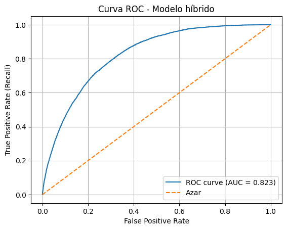
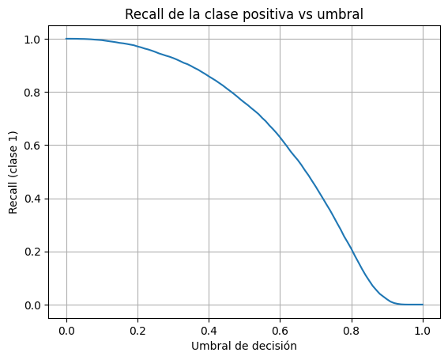

10. Modelo original#
import numpy as np
from sklearn.base import BaseEstimator, ClassifierMixin, clone
from sklearn.tree import DecisionTreeClassifier
import cvxpy as cp
from sklearn.model_selection import train_test_split
from sklearn.metrics import classification_report, confusion_matrix
from sklearn.tree import DecisionTreeClassifier
import pandas as pd
from sklearn.pipeline import Pipeline
from sklearn.compose import ColumnTransformer
from sklearn.preprocessing import StandardScaler, OneHotEncoder
from imblearn.over_sampling import SMOTENC
from sklearn.metrics import classification_report
import numpy as np
from sklearn.base import BaseEstimator, ClassifierMixin, clone
from sklearn.ensemble import GradientBoostingClassifier, RandomForestClassifier
from sklearn.utils.class_weight import compute_class_weight
from sklearn.utils.validation import check_X_y, check_array, check_is_fitted
import numpy as np
import matplotlib.pyplot as plt
from sklearn.metrics import roc_curve, auc, recall_score
X = pd.read_csv('df_limpio.csv').drop(columns=["diabetes"])
y = pd.read_csv('df_limpio.csv')["diabetes"]
X_train_ = pd.read_csv('X_train.csv')
X_test_ = pd.read_csv('X_test.csv')
y_train_ = pd.read_csv('y_train.csv')["diabetes"]
y_test_ = pd.read_csv('y_test.csv')["diabetes"]
CMBoost Classifier#
class CMBoostClassifier(BaseEstimator, ClassifierMixin):
"""
Implementación del algoritmo CMBoost de Zhang (2019).
- f(x) = sum_j alpha_j h_j(x)
- y en {-1, +1}
- h_j(x) en {-1, +1}
- Problema principal (ec. 28):
min_{alpha, rho} 1/2 rho^T B rho + lambda_g^T rho
s.t. alpha >= 0, 1^T alpha = D
rho_i = y_i h_i^T alpha
Parámetros
----------
base_estimator : clf sklearn, opcional
Clasificador débil. Por defecto: árbol de decisión profundidad 1.
n_estimators : int
Número máximo de iteraciones (column generation / boosting rounds).
lambda1 : float
λ1 en el paper.
lambda2 : float
λ2 en el paper.
c_cost : float
Parámetro de costo c de las ec. (18)–(19).
D : float
Constante D de la restricción 1^T alpha = D (en el paper es una constante positiva).
solver : str
Solver de cvxpy ('SCS', 'OSQP', 'ECOS', etc.)
verbose : bool
Si True, imprime info de cada iteración.
"""
def __init__(self,
base_estimator=None,
n_estimators=10,
lambda1=1.0,
lambda2=1.0,
c_cost=1.0,
D=1.0,
solver="SCS",
verbose=False):
if base_estimator is None:
base_estimator = DecisionTreeClassifier(max_depth=1)
self.base_estimator = base_estimator
self.n_estimators = n_estimators
self.lambda1 = float(lambda1)
self.lambda2 = float(lambda2)
self.c_cost = float(c_cost)
self.D = float(D)
self.solver = solver
self.verbose = verbose
# ---------- Utilidades internas ----------
def _encode_labels(self, y):
"""
Mapea etiquetas originales a {-1, +1}
y guarda la info para deshacer el mapeo en predict().
"""
y = np.asarray(y)
classes = np.unique(y)
if classes.size != 2:
raise ValueError("CMBoost solo soporta clasificación binaria.")
# Tomamos classes[0] = -1, classes[1] = +1
self.classes_ = classes
y_signed = np.where(y == classes[1], 1.0, -1.0)
return y_signed
def _build_cost_sensitive_matrices(self, y_signed):
"""
Construye A, d_i, k_i, K, B, lambda_g siguiendo
las ecuaciones (11), (18)-(19), (23)-(26) del paper.
"""
y_signed = np.asarray(y_signed).astype(float)
N = y_signed.shape[0]
# --- (11) Matriz A ---
c_A = -1.0 / (N - 1.0)
A = np.full((N, N), c_A, dtype=float)
np.fill_diagonal(A, 1.0)
# --- desequilibrio ru = n_- / n_+ ---
idx_pos = np.where(y_signed == 1.0)[0]
idx_neg = np.where(y_signed == -1.0)[0]
n_plus = idx_pos.size
n_minus = idx_neg.size
if n_plus == 0 or n_minus == 0:
raise ValueError("Todas las etiquetas son iguales; CMBoost necesita clases +1 y -1.")
r_u = n_minus / n_plus
c = self.c_cost
# --- (18) pesos d_i ---
d = np.empty(N, dtype=float)
term_pos = 1.0 + c * r_u * abs(np.log(r_u))
term_neg = 1.0 + c * (1.0 / r_u) * abs(np.log(1.0 / r_u))
d[idx_pos] = term_pos
d[idx_neg] = term_neg
# --- (19) pesos k_i ---
k = np.empty(N, dtype=float)
k[idx_pos] = term_neg # fíjate en el cambio cruzado
k[idx_neg] = term_pos
# --- (23) K = diag(k1,...,kN) ---
K = np.diag(k)
# --- (24) B = K^T A K (como K es diagonal, K^T = K) ---
B = K @ A @ K
# --- (25) vector d (ya lo tenemos) ---
# d = [d1,...,dN]
# --- (26) lambda_g = - lambda2 / (2 N lambda1) * d ---
lambda_g = - self.lambda2 / (2.0 * N * self.lambda1) * d
return B, lambda_g, d, k, r_u
def _compute_H_column(self, estimator, X):
"""
Devuelve h(x_i) en {-1, +1} para todos los i.
Si el estimador predice 0/1, lo mapeamos a -1/+1.
"""
X = np.asarray(X)
# Intentamos usar predict_proba si existe
if hasattr(estimator, "predict_proba"):
proba = estimator.predict_proba(X)[:, 1]
h = np.where(proba >= 0.5, 1.0, -1.0)
else:
pred = estimator.predict(X)
# Mapear a -1/+1 usando las clases originales
h = np.where(pred == self.classes_[1], 1.0, -1.0)
return h.astype(float)
# ---------- API principal ----------
def fit(self, X, y):
"""
Entrena CMBoost sobre (X, y).
"""
X = np.asarray(X)
y_signed = self._encode_labels(y)
N = X.shape[0]
# Construir matrices costo-sensibles
B, lambda_g, d_vec, k_vec, r_u = self._build_cost_sensitive_matrices(y_signed)
self.B_ = B
self.lambda_g_ = lambda_g
self.d_vec_ = d_vec
self.k_vec_ = k_vec
self.r_u_ = r_u
# Lista de clasificadores débiles
self.estimators_ = []
H_cols = []
# Inicializar "u" (dual) con algo razonable: uniforme
u = np.ones(N) / N
for t in range(self.n_estimators):
if self.verbose:
print(f"\n=== Iteración {t+1}/{self.n_estimators} ===")
# 1) Entrenamos un nuevo clasificador base usando pesos ~ |u_i|
base = clone(self.base_estimator)
sample_weight = np.abs(u)
if sample_weight.sum() == 0:
sample_weight = None
# Para el estimador base, usamos y en {0,1}
y_binary = (y_signed == 1.0).astype(int)
base.fit(X, y_binary, sample_weight=sample_weight)
self.estimators_.append(base)
# 2) Calculamos su columna h(x_i)
h_col = self._compute_H_column(base, X) # N vector en {-1,+1}
H_cols.append(h_col)
# Matriz H (N x M)
H = np.column_stack(H_cols)
M = H.shape[1]
# 3) Definimos variables del QP (28)
alpha = cp.Variable(M)
rho = cp.Variable(N)
# Objetivo: 1/2 rho^T B rho + lambda_g^T rho
objective = 0.5 * cp.quad_form(rho, B) + lambda_g @ rho
# Restricciones:
# - alpha >= 0
# - 1^T alpha = D
# - rho = y .* (H alpha)
constraints = [
alpha >= 0,
cp.sum(alpha) == self.D,
rho == cp.multiply(y_signed, H @ alpha)
]
prob = cp.Problem(cp.Minimize(objective), constraints)
prob.solve(solver=self.solver, verbose=False)
if prob.status not in ["optimal", "optimal_inaccurate"]:
raise RuntimeError(f"El QP no convergió (status: {prob.status})")
alpha_val = np.array(alpha.value).reshape(-1)
rho_val = np.array(rho.value).reshape(-1)
self.alpha_ = alpha_val
self.rho_ = rho_val
self.H_ = H
# 4) Recuperamos el dual de la restricción rho == y .* (H alpha)
# Esto corresponde al vector u del paper.
u = constraints[2].dual_value.reshape(-1)
if self.verbose:
obj_val = objective.value
margin_mean = (rho_val).mean()
print(f" Objetivo QP (28): {obj_val:.6f}")
print(f" ||alpha||_1 = {alpha_val.sum():.6f}")
print(f" Media de márgenes (aprox): {margin_mean:.6f}")
return self
def _decision_function(self, X):
"""
f(x) = sum_j alpha_j h_j(x)
"""
X = np.asarray(X)
if not hasattr(self, "alpha_"):
raise RuntimeError("Debes entrenar el modelo con fit() primero.")
H_new = []
for est in self.estimators_:
h_col = self._compute_H_column(est, X)
H_new.append(h_col)
H_new = np.column_stack(H_new) # (n_samples, M)
f = H_new @ self.alpha_
return f
def predict(self, X):
"""
Predicción de etiquetas originales (las mismas que en y de fit).
"""
f = self._decision_function(X)
y_signed_pred = np.where(f >= 0, 1.0, -1.0)
# Deshacer el mapeo
y_pred = np.where(y_signed_pred == 1.0,
self.classes_[1],
self.classes_[0])
return y_pred
def predict_proba(self, X):
"""
Probabilidades aproximadas usando función sigmoide sobre f(x).
"""
f = self._decision_function(X)
# Sigmoide
p_pos = 1.0 / (1.0 + np.exp(-f))
p_neg = 1.0 - p_pos
return np.vstack([p_neg, p_pos]).T
numeric_features = X_train_.select_dtypes(include="number").columns
categorical_features = X_train_.select_dtypes(include="object").columns
preprocessor = ColumnTransformer(
transformers=[
('num', StandardScaler(), numeric_features),
('cat', OneHotEncoder(handle_unknown='ignore'), categorical_features)
]
)
pipeline = Pipeline(steps=[
('preprocessing', preprocessor),
# ('balanceo', smote), # <-- solo si lo necesitas
('model', CMBoostClassifier(
n_estimators=10, # empieza con algo pequeño
lambda1=1.0,
lambda2=1.0,
c_cost=1.0,
D=1.0,
solver="SCS",
verbose=True # pon False si no quieres logs
))
])
Toma de Submuestra#
import numpy as np
from sklearn.model_selection import train_test_split
# Suponiendo que ya tienes X y y (pandas o numpy)
X_arr = np.asarray(X)
y_arr = np.asarray(y)
# Etiqueta positiva (ajusta si tu positiva NO es 1)
pos_label = 1
pos_idx = np.where(y == pos_label)[0]
neg_idx = np.where(y != pos_label)[0]
max_total = 5000
max_pos = min(len(pos_idx), int(max_total * 0.6))
max_neg = max_total - max_pos
rng = np.random.RandomState(42)
pos_sample = rng.choice(pos_idx, size=max_pos, replace=False)
neg_sample = rng.choice(neg_idx, size=max_neg, replace=False)
sub_idx = np.concatenate([pos_sample, neg_sample])
rng.shuffle(sub_idx)
# 👇 IMPORTANTÍSIMO: usamos iloc para mantener DataFrame/Serie
X_sub = X.iloc[sub_idx].copy()
y_sub = y.iloc[sub_idx].copy()
print(X_sub.shape)
print(y_sub.value_counts())
(5000, 39)
diabetes
1 3000
0 2000
Name: count, dtype: int64
X_train, X_test, y_train, y_test = train_test_split(
X_sub, y_sub,
test_size=0.3,
stratify=y_sub,
random_state=42
)
print("Tamaño train:", X_train.shape[0])
print("Tamaño test :", X_test.shape[0])
Tamaño train: 3500
Tamaño test : 1500
import numpy as np
unique, counts = np.unique(y, return_counts=True)
dict(zip(unique, counts))
{np.int64(0): np.int64(212202), np.int64(1): np.int64(33811)}
unique, counts = np.unique(y_train, return_counts=True)
dict(zip(unique, counts))
{np.int64(0): np.int64(1400), np.int64(1): np.int64(2100)}
pipeline.fit(X_train, y_train)
=== Iteración 1/10 ===
Objetivo QP (28): 3247.521472
||alpha||_1 = 1.000000
Media de márgenes (aprox): 0.312000
=== Iteración 2/10 ===
Objetivo QP (28): 2105.332181
||alpha||_1 = 1.000000
Media de márgenes (aprox): 0.286969
=== Iteración 3/10 ===
Objetivo QP (28): 1552.677865
||alpha||_1 = 1.000000
Media de márgenes (aprox): 0.285183
=== Iteración 4/10 ===
Objetivo QP (28): 1497.962481
||alpha||_1 = 1.000000
Media de márgenes (aprox): 0.286801
=== Iteración 5/10 ===
Objetivo QP (28): 1497.962179
||alpha||_1 = 1.000000
Media de márgenes (aprox): 0.286801
=== Iteración 6/10 ===
Objetivo QP (28): 1497.960032
||alpha||_1 = 0.999999
Media de márgenes (aprox): 0.286801
=== Iteración 7/10 ===
Objetivo QP (28): 1497.984382
||alpha||_1 = 1.000007
Media de márgenes (aprox): 0.286803
=== Iteración 8/10 ===
Objetivo QP (28): 1497.962447
||alpha||_1 = 1.000000
Media de márgenes (aprox): 0.286801
=== Iteración 9/10 ===
Objetivo QP (28): 1497.962447
||alpha||_1 = 1.000000
Media de márgenes (aprox): 0.286801
=== Iteración 10/10 ===
Objetivo QP (28): 1497.962447
||alpha||_1 = 1.000000
Media de márgenes (aprox): 0.286801
Pipeline(steps=[('preprocessing',
ColumnTransformer(transformers=[('num', StandardScaler(),
Index(['dias_salud_fisica', 'dias_salud_mental', 'horas_sueño',
'altura_metros', 'peso_kilos', 'bmi'],
dtype='object')),
('cat',
OneHotEncoder(handle_unknown='ignore'),
Index(['salud_general', 'ultimo_chequeo', 'actividades_fisicas',
'dientes_removidos', 'ataque_cardiaco', 'angina', 'ACV', 'asma', 'EPOC',
'trastorno_depre', 'enfermedad_riñon', 'artritis', 'estado_fumador',
'uso_cigarroelect', 'categoria_etnica', 'categoria_edad',
'bebedor_alcohol', 'alto_riesgo_ap'],
dtype='object'))])),
('model',
CMBoostClassifier(base_estimator=DecisionTreeClassifier(max_depth=1),
verbose=True))])In a Jupyter environment, please rerun this cell to show the HTML representation or trust the notebook. On GitHub, the HTML representation is unable to render, please try loading this page with nbviewer.org.
Parameters
| steps | [('preprocessing', ...), ('model', ...)] | |
| transform_input | None | |
| memory | None | |
| verbose | False |
Parameters
| transformers | [('num', ...), ('cat', ...)] | |
| remainder | 'drop' | |
| sparse_threshold | 0.3 | |
| n_jobs | None | |
| transformer_weights | None | |
| verbose | False | |
| verbose_feature_names_out | True | |
| force_int_remainder_cols | 'deprecated' |
Index(['dias_salud_fisica', 'dias_salud_mental', 'horas_sueño',
'altura_metros', 'peso_kilos', 'bmi'],
dtype='object')Parameters
| copy | True | |
| with_mean | True | |
| with_std | True |
Index(['salud_general', 'ultimo_chequeo', 'actividades_fisicas',
'dientes_removidos', 'ataque_cardiaco', 'angina', 'ACV', 'asma', 'EPOC',
'trastorno_depre', 'enfermedad_riñon', 'artritis', 'estado_fumador',
'uso_cigarroelect', 'categoria_etnica', 'categoria_edad',
'bebedor_alcohol', 'alto_riesgo_ap'],
dtype='object')Parameters
| categories | 'auto' | |
| drop | None | |
| sparse_output | True | |
| dtype | <class 'numpy.float64'> | |
| handle_unknown | 'ignore' | |
| min_frequency | None | |
| max_categories | None | |
| feature_name_combiner | 'concat' |
Parameters
| base_estimator | DecisionTreeC...r(max_depth=1) | |
| n_estimators | 10 | |
| lambda1 | 1.0 | |
| lambda2 | 1.0 | |
| c_cost | 1.0 | |
| D | 1.0 | |
| solver | 'SCS' | |
| verbose | True |
DecisionTreeClassifier(max_depth=1)
Parameters
| criterion | 'gini' | |
| splitter | 'best' | |
| max_depth | 1 | |
| min_samples_split | 2 | |
| min_samples_leaf | 1 | |
| min_weight_fraction_leaf | 0.0 | |
| max_features | None | |
| random_state | None | |
| max_leaf_nodes | None | |
| min_impurity_decrease | 0.0 | |
| class_weight | None | |
| ccp_alpha | 0.0 | |
| monotonic_cst | None |
y_pred = pipeline.predict(X_test)
print(confusion_matrix(y_test, y_pred))
print(classification_report(y_test, y_pred, digits=4))
[[244 356]
[109 791]]
precision recall f1-score support
0 0.6912 0.4067 0.5121 600
1 0.6896 0.8789 0.7728 900
accuracy 0.6900 1500
macro avg 0.6904 0.6428 0.6425 1500
weighted avg 0.6903 0.6900 0.6685 1500
Aplicacion por separado de Modelos complementarios#
import numpy as np
from sklearn.pipeline import Pipeline
from sklearn.ensemble import GradientBoostingClassifier
from sklearn.utils.class_weight import compute_class_weight
from sklearn.metrics import confusion_matrix, classification_report
from sklearn.model_selection import train_test_split
# 1) Pesos de clase automáticos (tipo cost-sensitive)
classes = np.unique(y_train_)
class_weights = compute_class_weight(
class_weight="balanced",
classes=classes,
y=y_train_
)
w_dict = {cls: w for cls, w in zip(classes, class_weights)}
print("Pesos por clase:", w_dict)
# Vector de pesos para cada muestra del train
sample_weight = np.array([w_dict[label] for label in y_train_])
# 2) Modelo Gradient Boosting (más estable que nuestro boost casero)
gb_cs = GradientBoostingClassifier(
n_estimators=300,
learning_rate=0.05,
max_depth=3,
subsample=0.8,
random_state=42
)
# 3) Pipeline completo con tu preprocesador
pipeline_gb = Pipeline(steps=[
("prep", preprocessor), # tu ColumnTransformer(num, cat)
("model", gb_cs)
])
# 4) Entrenar con pesos
pipeline_gb.fit(X_train_, y_train_, model__sample_weight=sample_weight)
# 5) Evaluar
y_pred = pipeline_gb.predict(X_test_)
print("MATRIZ DE CONFUSIÓN - GradientBoosting cost-sensitive")
print(confusion_matrix(y_test_, y_pred))
print(classification_report(y_test_, y_pred, digits=4))
Pesos por clase: {np.int64(0): np.float64(0.5796682397452555), np.int64(1): np.float64(3.638013351360487)}
MATRIZ DE CONFUSIÓN - GradientBoosting cost-sensitive
[[45260 18401]
[ 2260 7883]]
precision recall f1-score support
0 0.9524 0.7110 0.8142 63661
1 0.2999 0.7772 0.4328 10143
accuracy 0.7201 73804
macro avg 0.6262 0.7441 0.6235 73804
weighted avg 0.8628 0.7201 0.7618 73804
from imblearn.ensemble import BalancedRandomForestClassifier
from sklearn.pipeline import Pipeline
from sklearn.metrics import confusion_matrix, classification_report
brf = BalancedRandomForestClassifier(
n_estimators=300,
max_depth=None,
min_samples_split=10,
min_samples_leaf=5,
n_jobs=-1,
random_state=42
)
pipeline_brf = Pipeline(steps=[
("prep", preprocessor),
("model", brf)
])
pipeline_brf.fit(X_train_, y_train_)
y_pred_brf = pipeline_brf.predict(X_test_)
print("MATRIZ DE CONFUSIÓN - BalancedRandomForest")
print(confusion_matrix(y_test_, y_pred_brf))
print(classification_report(y_test_, y_pred_brf, digits=4))
MATRIZ DE CONFUSIÓN - BalancedRandomForest
[[47141 16520]
[ 2667 7476]]
precision recall f1-score support
0 0.9465 0.7405 0.8309 63661
1 0.3116 0.7371 0.4380 10143
accuracy 0.7400 73804
macro avg 0.6290 0.7388 0.6344 73804
weighted avg 0.8592 0.7400 0.7769 73804
Modelo Original HybridCostSensitiveEnsemble#
try:
from imblearn.ensemble import BalancedRandomForestClassifier
HAS_IMB = True
except ImportError:
HAS_IMB = False
class HybridCostSensitiveEnsemble(BaseEstimator, ClassifierMixin):
"""
Modelo híbrido cost-sensitive y escalable.
Combina:
- GradientBoostingClassifier con sample_weight (cost-sensitive)
- BalancedRandomForestClassifier (o RandomForest con class_weight="balanced_subsample")
En predicción:
p_hibrido = (p_gb + p_rf) / 2
Parámetros
----------
gb_params : dict
Hiperparámetros para GradientBoostingClassifier.
rf_params : dict
Hiperparámetros para (Balanced)RandomForest.
use_balanced_rf : bool
Si True y está imbalanced-learn instalado, usa BalancedRandomForestClassifier.
"""
def __init__(self,
gb_params=None,
rf_params=None,
use_balanced_rf=True,
random_state=None):
self.gb_params = gb_params
self.rf_params = rf_params
self.use_balanced_rf = use_balanced_rf
self.random_state = random_state
def _init_models(self):
gb_defaults = dict(
n_estimators=300,
learning_rate=0.05,
max_depth=3,
subsample=0.8,
random_state=self.random_state
)
if self.gb_params is not None:
gb_defaults.update(self.gb_params)
self.gb_ = GradientBoostingClassifier(**gb_defaults)
if self.use_balanced_rf and HAS_IMB:
rf_cls = BalancedRandomForestClassifier
rf_defaults = dict(
n_estimators=300,
max_depth=None,
min_samples_split=10,
min_samples_leaf=5,
n_jobs=-1,
random_state=self.random_state
)
else:
rf_cls = RandomForestClassifier
rf_defaults = dict(
n_estimators=300,
max_depth=None,
min_samples_split=10,
min_samples_leaf=5,
class_weight="balanced_subsample",
n_jobs=-1,
random_state=self.random_state
)
if self.rf_params is not None:
rf_defaults.update(self.rf_params)
self.rf_ = rf_cls(**rf_defaults)
def fit(self, X, y):
X, y = check_X_y(X, y)
self.classes_ = np.unique(y)
# Inicializamos modelos
self._init_models()
# Pesos de clase para cost-sensitive (como d_i agregados por clase)
class_weights = compute_class_weight(
class_weight="balanced",
classes=self.classes_,
y=y
)
w_dict = {cls: w for cls, w in zip(self.classes_, class_weights)}
sample_weight = np.array([w_dict[label] for label in y])
# Entrenamos GB con sample_weight
self.gb_.fit(X, y, sample_weight=sample_weight)
# Entrenamos RF (BalancedRF ya maneja el desbalance internamente)
self.rf_.fit(X, y)
return self
def predict_proba(self, X):
check_is_fitted(self, ["gb_", "rf_", "classes_"])
X = check_array(X)
proba_gb = self.gb_.predict_proba(X)
proba_rf = self.rf_.predict_proba(X)
# promedio simple (podrías cambiar a promedio ponderado)
proba_hybrid = 0.5 * (proba_gb + proba_rf)
return proba_hybrid
def predict(self, X):
proba = self.predict_proba(X)
# clase con mayor probabilidad
idx = np.argmax(proba, axis=1)
return self.classes_[idx]
from sklearn.pipeline import Pipeline
from sklearn.model_selection import train_test_split
from sklearn.metrics import confusion_matrix, classification_report
hybrid_model = HybridCostSensitiveEnsemble(
gb_params={
"n_estimators": 300,
"learning_rate": 0.05,
"max_depth": 3,
"subsample": 0.8,
},
rf_params={
"n_estimators": 300,
"min_samples_split": 10,
"min_samples_leaf": 5,
},
use_balanced_rf=True,
random_state=42
)
pipeline_hybrid = Pipeline(steps=[
("prep", preprocessor),
("model", hybrid_model)
])
pipeline_hybrid.fit(X_train_, y_train_)
y_pred = pipeline_hybrid.predict(X_test_)
print("MATRIZ DE CONFUSIÓN - Modelo híbrido")
print(confusion_matrix(y_test_, y_pred))
print("\nREPORTE")
print(classification_report(y_test_, y_pred, digits=4))
MATRIZ DE CONFUSIÓN - Modelo híbrido
[[46237 17424]
[ 2434 7709]]
REPORTE
precision recall f1-score support
0 0.9500 0.7263 0.8232 63661
1 0.3067 0.7600 0.4371 10143
accuracy 0.7309 73804
macro avg 0.6284 0.7432 0.6301 73804
weighted avg 0.8616 0.7309 0.7702 73804
# Probabilidades de la clase positiva (ajusta el índice si tu clase positiva no es 1)
y_proba = pipeline_hybrid.predict_proba(X_test_)[:, 1]
fpr, tpr, thresholds = roc_curve(y_test_, y_proba, pos_label=1)
roc_auc = auc(fpr, tpr)
plt.figure()
plt.plot(fpr, tpr, label=f"ROC curve (AUC = {roc_auc:.3f})")
plt.plot([0, 1], [0, 1], linestyle="--", label="Azar")
plt.xlabel("False Positive Rate")
plt.ylabel("True Positive Rate (Recall)")
plt.title("Curva ROC - Modelo híbrido")
plt.legend(loc="lower right")
plt.grid(True)
plt.show()

thresholds_recall = np.linspace(0.0, 1.0, 101)
recalls = []
for thr in thresholds_recall:
y_pred_thr = (y_proba >= thr).astype(int)
rec = recall_score(y_test_, y_pred_thr, pos_label=1)
recalls.append(rec)
plt.figure()
plt.plot(thresholds_recall, recalls)
plt.xlabel("Umbral de decisión")
plt.ylabel("Recall (clase 1)")
plt.title("Recall de la clase positiva vs umbral")
plt.grid(True)
plt.show()
